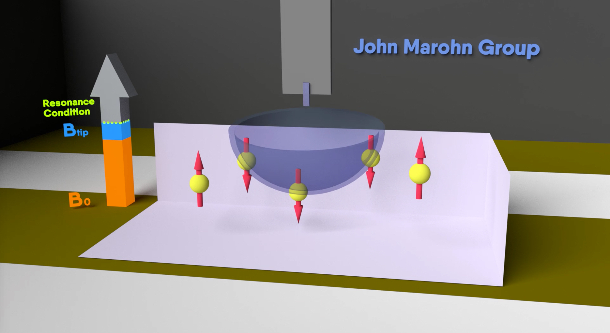
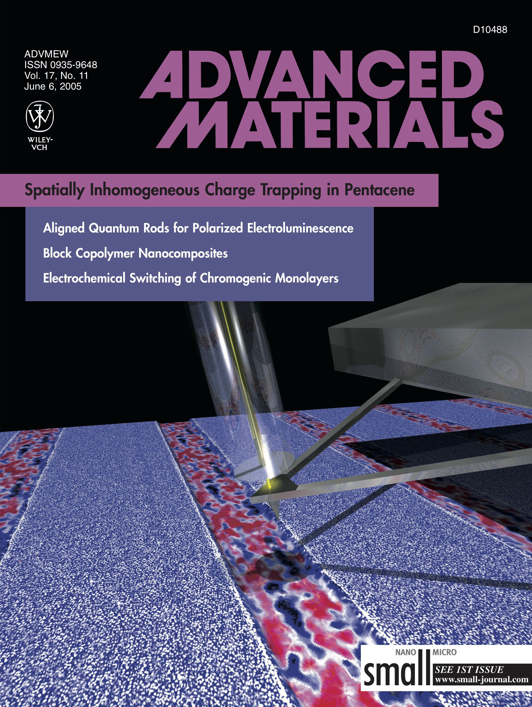
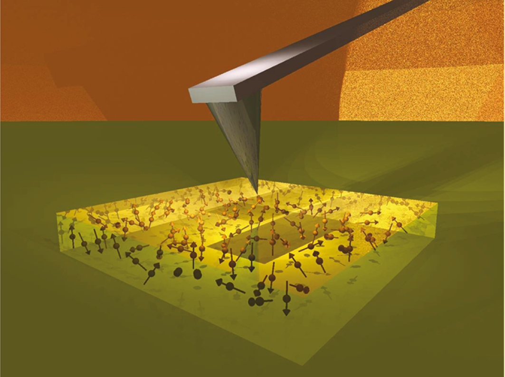

We carry out research at the intersection of chemistry, materials science, physics, and biology. We seek students of any background who are fearless about trying new things, are primarily interested in experiment, are self-starters, work well on a team and with external collaborators, and work best if given a certain degree of independence. If you are looking to define a new field and are looking to gain experience in a wide range of advanced techniques in physical chemistry, then come talk to us.

Marohn’s team has taken on the ambitious goal of developing a microscope for imaging single molecules in three dimensions. Imagine being able to determine the full three dimensional structure of an individual membrane protein, in situ in a flash-frozen cell, with all the protein’s cofactors and post-translational modifications in place! To address this challenge, we conceived and demonstrated a new physical effect for detecting magnetic resonance using a spin-force gradient acting on a magnet-tipped attonewton-sensitivity cantilever . This innovation led to the first demonstration of magnet-on-cantilever or “scanned probe” nuclear magnetic resonance (NMR).
We modified and extended our force-gradient approach to detect electron spin resonance (ESR) from a nitroxide spin label widely used in biology . In a PNAS paper reporting this advance and in a subsequent arXiv paper , we laid out our vision for leveraging this breakthrough to determine the tertiary structure of an individual biomacromolecule or macromolecular complex by directly imaging the locations of electron spin labels attached to it. The NIH grant initially supporting this work scored in the upper 1.2 percentile.
In a collaboration with a team at IBM Almaden, our team reported high-compliance cantilevers with integrated 200 nm wide cobalt nanorod tips that detected nuclear magnetic resonance at 500 μproton sensitivity . Our team was the first to create microwave-induced hyperpolarized nuclear magnetization in a magnetic resonance force microscope experiment , via the dynamic nuclear polarization (DNP) effect. This experiment presents many exciting opportunities for increasing the sensitivity and resolution of nanoscale magnetic resonance imaging.
Current work is focussed on imaging individual electron spin labels .

Our team’s work has significantly advanced our understanding of charge injection, charge trapping, and charge motion in organic and hybrid semiconductors. This understanding was achieved by developing a one-of-a-kind electric force microscope that operates in high vacuum, over a large temperature range, with the ability to illuminate the sample with variable-wavelength light.
We invented an approach for directly imaging trapped charge in a transistor, and were the first to record images of trapped charge in a range of molecular and polymeric semiconductors. Our images of trapped charge in pentacene were particularly striking and overturned a decade of conventional wisdom regarding grain boundaries as the primary source of trapping in this benchmark polycrystalline semiconductor.
We combined electric force microscopy and charge transport measurements to make a clean and unambiguous test of metal/organic charge injection theory . From this data we inferred — for the first time in a single experiment — the temperature dependence of all the main factors governing charge injection: the electric-field induced lowering of the image-potential barrier, the interfacial charge density, and the charge mobility.
We combined electric force microscopy with variable-wavelength light to mechanically measure the electronic spectra of long-lived charged species in a film at tens-of-molecule sensitivity , identifying, for the first time, a specific molecule as the trap-causing impurity in an organic semiconductor. Our studies of ion motion in light-emitting electrochemical cells (LEECs) have generated a flurry of activity in this subfield of organic electronics.
Current work seeks to image charge generation in organic semiconductors with nanometer spatial resolution and nanosecond time resolution and to understand light-induced electrical and ionic conductivity in metal-halide perovskite semiconductors .

Attonewton-sensitivity cantilevers push scanned probe microscopy into a previously unexplored regime where noncontact interactions between the cantilever tip and the sample dominate the measurement noise. Our team has carried out pioneering work to establish the fundamental limits of detecting forces and force gradients with a cantilever near a dielectric surface . We discovered, in high vacuum measurements at room temperature, that noncontact friction was strongly dependent on the chemical composition and the thickness of the underlying polymer sample.
In collaboration with Cornell theorist Roger Loring and his group, we experimentally tested a single unified theory describing both noncontact friction and cantilever frequency jitter arising from molecular fluctuations. This work led to the remarkable conclusion that thermal atomic motions in the polymer interacting with cantilever charge place a fundamental limit on how small a force can be measured near a surface. These studies open up exciting possibilities for exploiting the exquisite capability of attonewton-sensitivity cantilevers to measure and map, at nanometer-scale spatial resolution, fluctuations arising from charge trapping and charge motion in solar cells and other technologically important samples.
Current work tries to understand nanoscale electric field fluctuations over metals at low temperature.